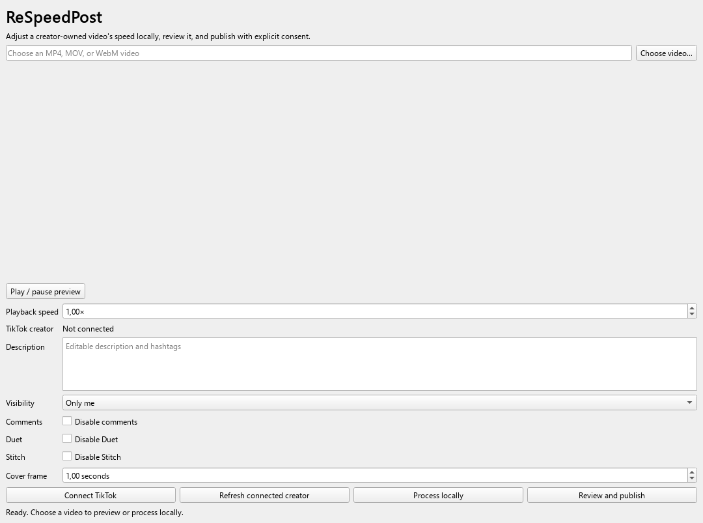

Local speed adjustment
Choose a speed from 0.25× to 4.00×. FFmpeg creates an H.264/AAC MP4 locally while preserving audio pitch timing.
Desktop video preparation and publishing
ReSpeedPost helps creators adjust a locally stored video's playback speed, preview the result, edit TikTok publishing choices, and post only after explicit confirmation.

The desktop interface keeps preview, speed, description, visibility, interaction controls, cover frame, and confirmation in one workflow.
Product capabilities
Video processing stays on the user's computer. ReSpeedPost sends a file to TikTok only after the connected creator, metadata, and platform-supported choices are visible.
Choose a speed from 0.25× to 4.00×. FFmpeg creates an H.264/AAC MP4 locally while preserving audio pitch timing.
Fine-tune playback speed in 0.05× increments to suit the timing and format of each video.
Review the selected local video before publishing. The app never begins a TikTok upload merely because a file was selected.
ReSpeedPost queries TikTok for the connected creator's nickname, privacy levels, interaction restrictions, and maximum duration.
Edit the description and hashtags, visibility, comments, Duet, Stitch, and cover-frame timestamp before confirmation.
The desktop interface and CLI share one processing and publishing service, making behavior consistent for interactive and scripted workflows.
How it works
Choose an MP4, MOV, or WebM file that you own or are authorized to publish, then preview it in the desktop app.
Set the playback speed for the selected video and review the choice before processing.
Authorize a TikTok account through Login Kit. ReSpeedPost displays the creator identity returned by TikTok.
Refresh the creator's available options, edit the description and interaction settings, and choose an allowed visibility.
A final summary identifies the creator, file, speed, visibility, and description. Only an affirmative confirmation starts processing and transfer.
Transparent by design
The OAuth client secret stays on a small hosted exchange service. Access tokens remain on the user's device, processing happens locally, and video bytes upload directly from that device to TikTok.